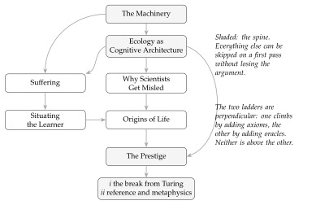

How to Read This Book
How to Read This Book{How to Read This Book} {figure}figure{0}
This book is long, and it is long in an uneven way: some of it is confessional, some of it is a mathematics reference, and some of it is a story about whales. You are entitled to know the shape of the thing before you commit, and to know which parts you can skip without losing the argument. That is what this chapter is for. The confessional part of the Pledge has just ended; this chapter and the one after it are the only chapters in the book that are about the book.
What it is trying to do
One question runs underneath all of it.
What is the minimum mathematical structure needed to ground physics, knowledge, life, and mind?
The answer developed here is that a graph-structured lambda theory — a grammar of terms, some equations on those terms, and some rules for rewriting them — is already enough, provided you add two things: a site at which two terms meet, and a meter on that site. Everything else in the Turn is a fact about a theory so equipped.
The three acts do different jobs. The Pledge, which you are nearly finished with, is the ordinary world: what computation is, why the version of it you are carrying around is probably a function machine and needs updating, and why the question “what is it like to be a computer program” is a better question than the one usually asked. The Turn is the mathematics, and it is most of the book. The Prestige brings it back — and it brings it back by explaining how the trick was done.
i want to say that last part plainly here, at the front, because it changes how the middle should be read. The Prestige opens by showing you the method: the whole construction was bought with a single restriction of scope, the restriction yielded an ontology and a grounded language for free, and Chapter 56 names the exact line where it happens. The book audits itself before it finishes. If you would rather know that going in than be surprised by it, now you do.
The shape of it
The Turn is divided into six parts of its own. They do not depend on each other in the order they are printed, and Figure 0.1 records what actually depends on what. The arrows are dependencies, not reading order.

Two things about the figure are worth saying in words.
The first is that the shaded boxes are the spine. If you read the Pledge, the Machinery, the Ecology, and the Prestige, you have read the argument. The other four parts of the Turn are the argument applied — to physics, to the limits of science, to what a learner gains by watching its own reserves, to the origin of life — and each is worth having, but none is load-bearing for the others’ conclusions. The Prestige is not in that category: it carries the break from Turing and the account of consciousness as well as the reveal, and it now carries the survey of models of computation that says why the third generation was chosen. It is roughly half again as long as it once was.
The second concerns the two ladders, which are the single most confusing structural feature of the book and which i have watched more than one reader run aground on. Situating the Learner climbs a ladder of subcategories: each chapter imposes one more axiom on a cost-accounted theory, and each axiom carves out the theories that satisfy it. The Prestige’s first half climbs a different ladder, of choice strength. These are perpendicular. A theory can be high on one and low on the other, and neither ladder is a refinement of the other. Remark 27.1 says this once, in passing, three hundred pages in. It should have been said here, so here it is.
A confusing detail about the part numbers.
LaTeX{} numbers every part in one sequence, so the Turn’s
six internal parts print as Parts III through VIII, while the prose
— following the Overarching Introduction — calls them Parts I
through VI of the Turn.
The Prestige now has two internal parts of its own, which print as
Parts X and XI and which the prose calls its first and second halves.
Both conventions are used.
Where it matters i have referred to parts by name rather than by
number, and i recommend you do the same.
Six routes through
Front to back.
About six hundred pages. This is the order the argument was built in and the order in which each part earns the next, and if you have the time it is what i would want. Everything below is a compromise.
The short route — about ninety pages.
The Pledge, then Chapter 21 (The Mortal Scientist), then the Prestige. That is the argument end to end: what a learner is, what it costs to know anything, and what the book concludes about the whole construction. What you lose: every reason to believe the machinery is well founded, and the entire empirical contact surface. You will have to take a good deal on trust.
The philosopher’s route — about two hundred pages.
The Pledge, the Ecology part entire (Chapters 21 to 24), Why Scientists Get Misled, then the Prestige. This is the epistemology without the physics: what a budgeted knower can find out, why populations of knowers converge on a false ontology, and what that does to the theory of knowledge. What you lose: the derivation of causal structure and conservation. You keep the argument that a mind can do something a Turing machine cannot, since that argument now lives in the Prestige.
The mathematician’s route.
Skip the Pledge — it is confessional and it is my burden, not yours — and start at the Machinery. Then Ecology, then Situating the Learner, then the Prestige, whose first half is where the break from Turing was moved to and is the part of this book a mathematician is most likely to want. What you lose: the motivation for every choice made in the Machinery, which is all in the Pledge. That is more of a loss than it sounds.
The sceptic’s route — about fifty pages.
Chapters 66 and 67, and nothing else. They stand alone, they name what the book is built on and why, and they end by saying plainly what a history of receptions can and cannot establish. A reader who wants to know whether the rest is worth six hundred pages will find the case for that here, made without any of the machinery. What you lose: everything the book actually proves. These two chapters argue that a choice was available and was not taken; they do not argue that taking it works, and the argument that it works is the other six hundred pages.
The origins route.
Chapters 21 and 24, then the Origins of Life part entire. For readers who came for assembly theory and want the argument that bears on it. What you lose: why an ecology of learners is the right model of a mind in the first place, which is the premise the whole assembly-index argument runs on.
How hard it gets, and where
The difficulty is not monotone and it is fair to say so.
The Pledge assumes nothing. The Prestige is now two parts and they differ sharply. Its first half — the break from Turing, apertures, agency, choice types, consciousness — is genuinely technical and assumes the Machinery. Its second half assumes nothing until Chapter 64, which is the most technical thing there and which can be read for its conclusions alone; Chapter 65 after it needs only Chapter 64’s two conditions and the idea of a lattice position. Chapters 66 and 67, which come between the simulation chapter and Kant, assume nothing at all. They are history and argument rather than mathematics, and a reader who has bounced off everything technical in the book can read them cold. That is deliberate: they are where the book says why it is built on the calculus it is built on, and that reason ought not to require the calculus in order to be understood.
The Machinery is the driest part of the book, deliberately. It is a reference: it develops constructions once so that everything after can use them without rebuilding them. It is entirely legitimate to skim it, start the Ecology part, and come back when a construction is used and you want to know what it is. That is how i would read it if i had not written it.
The Ecology part is the most worked and, i think, the most rewarding. It is also the only place in the book where a claim is checked against a number.
Situating the Learner and the Prestige’s first half are the most speculative, and both say so in their own closing chapters — Chapter 63 at some length, since that half rests on the least-built construction in the book. Origins of Life has the most contact with empirical science and correspondingly the most exposure.
As for background: nothing requires category theory until Chapter 10, and that chapter builds what it needs. Process-calculus vocabulary is introduced in Chapter 7 and used throughout. Modal logic appears in Chapter 16 and is developed from scratch. No physics background is assumed anywhere, and where physics is invoked it is invoked as a target to be recovered rather than as a premise.
How to read a claim
The book states things, in its own phrase, precisely enough to be wrong. The typographic conventions are how you tell which kind of thing you are looking at, and they are load-bearing.
Theorem, Proposition, Lemma, Corollary — proved here or in a cited source.
Conjecture — believed, not proved, and named so that someone can settle it.
Observation — true and usually easy, but worth having a number so it can be pointed at.
Question — open, and stated in a form where an answer would be recognisable.
Remark — commentary, including several remarks whose job is to say that something earlier was wrong.
In the two chapters that draw correspondences with physics, the tables carry a status column reading con, thm, or cnj — construction, theorem, conjecture — because a table of correspondences is exactly the place where a reader can lose track of which rows are earned.
Where the weight rests on something unproved
This is the part of the chapter i would most want a sceptical reader to have. The following claims are load-bearing and not settled. They are flagged where they appear, but they appear scattered across six hundred pages, and a reader who discovers them one at a time will reasonably wonder what else is hiding. Nothing else is hiding.
Conjecture 42.1, on consensus under compactness, was stated as a theorem in earlier drafts and the proof does not work. It is now a conjecture, with the failed argument and both failed repairs written out beside it, because the way it fails says something: compactness is a richness condition and will not on its own make a process stop. The Conclusion had called it the sharpest result in its part, and two results in that part depend on it.
The fibration \(p\colon\Hyp\to\catGSLT\) — the object the Prestige’s first half is really about — has not been rigorously exhibited. Open problem (ii) of Section 60.7 says so. What the part does exhibit is a tower (Chapter 58), and Remark 58.2 concedes that the tower is an indexed family with overdetermined variance rather than the fibration earlier drafts called it.
Conjecture 31.1 and Conjecture 31.2, on energy–time conjugacy and on reversal symmetry carrying the generator, were demoted from claims to conjectures in this draft.
Conjecture 57.1, relating dissipation at a cut to the strength of the choice needed to schedule it, is one-directional at best.
Conjecture 26.1, that internalization is selected above a threshold in the variance of a learner’s inflow, is the price of the book’s account of suffering and it has not been checked. The machinery to check it exists — Chapter 13 supplies propensities and a working simulator — so this is a gap that could be closed by running something rather than by proving something, which makes it the cheapest item on this list and the most embarrassing to have left open.
Proposition 65.3, that no position in the lattice can faithfully simulate a position above it, is used in Chapter 65 to rule out one form of the simulation hypothesis. It depends on subject reduction for schedulers, which is Gap 2 of Chapter 63 and is open.
Conjecture 64.1, that a budget supplies finite differentiation, is what the Prestige’s account of notation rests on, and its transitivity is unverified.
Question 64.4, whether the import of a world’s behaviour into parallel composition is a distributive law. If it is not, compositionality does not transfer, and a good deal of the Prestige’s construction goes with it.
Condition 20.1 and Condition 20.2 — that a theory has the relative pushouts its labels are defined by, and that the resulting bisimulation is a congruence for a stated class of contexts. These are assumed by every chapter of the machinery part and verified for no theory in this book. They are being established elsewhere for the theories that matter here [27], and if they fail for a theory, the derived transition system that chapter uses does not exist. This is the most widely relied-upon unproved thing in the book, and it was invisible until Chapter 20 forced it into the open.
Theorem 20.1 is proved for the first-order fragment only. Remark 20.8 says what a binding constructor would need and does not supply it. Every calculus this book cares about has binders, so the theorem’s coverage of the cases of interest is a hope rather than a result.
Chapter 33 is a fifth case of a different kind: it is a chapter that reaches an obstruction and then goes sideways, and it is marked as unfinished in its opening remark rather than at its end. Two of its results are stated without their proofs — the conservativity theorem over the summation-free stochastic \(\pi\)-fragment, and the degeneration of the quantum-jump unravelling to the Gillespie algorithm — and both are proved in the source note rather than here. That is a deliberate compression and not a gap, but a reader who wants to check them will have to go and get them.
The interludes, and the lowercase i
Four short pieces of fiction sit between the parts, set in a different typeface and a narrower measure: The Permitted Say before the Pledge, The Foam-Born before the Turn, begotten not made before the Prestige, and Right-Sizing at the end. They were written collaboratively with Claude, an AI system built by Anthropic, and a note at the back of the book explains the arrangement and names the debts.
Two conventions, since you will meet them before that note. Throughout the main text i use a lowercase i for myself; it is not a typographical accident and the Pledge explains why. Inside the interludes the first person is capitalised, because inside the interludes the first person is not me.
What this book does not do
Briefly, and without hedging.
It does not show that the mind is computational. That premise is assumed on the first page and it is doing all the work; Chapter 56 is about how much work.
It does not build the encoder — the thing that would connect a computational learner to a world not made of computations. That is where the difficulty of any actual system would be concentrated, and Chapters 56 and 64 are an extended account of why.
It does not derive quantum mechanics. Chapter 33 gets as far as two obstructions, names them, and then finds one place a presentation can put coherence that neither obstruction touches — the equations it declines to quotient. That is a smaller thing than a derivation and it is the honest size of what is there. Remark 66.5 separates that technical question from a second one it is regularly confused with — what a quantum model stipulates about the creature it describes — and answers only the second.
It does not supply a metric on behaviours, without which the space read off a term structure stays combinatorial rather than becoming somewhere you could do physics. That is stated as the next problem and it is not solved here.
And it is not a theory of phenomenal consciousness, whatever the chapter titles may suggest. It makes a claim about suffering — a learner’s own reading of its distance from a level it holds as a goal — and a claim about consciousness as a position in a lattice of choice strength, and neither claim answers the question of why there is something it is like to be anything. The first of those two words is chosen deliberately and it is heavier than the structure it names; Chapter 26 says so in its own closing section, and i would rather be held to the structure. The Prestige is candid about which of the book’s questions have been answered and which have only been made tractable. Rather more of them are in the second category.
That is the map. The Turn begins on the other side of a story about a woman being interviewed about something she saw, and it begins in earnest a few pages after that.
{.figure}figure{0}